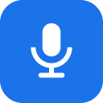

Audio Recorder for Slides
Record your voice in a Google Slides sidebar and put it on the slide in one click. Built for language teachers, and for anyone who would rather say it than type it.
What it does
- Record from the sidebar. Level meter, live waveform, playback preview, and as many takes as you need.
- Saved to your Drive. Recordings land in
Slides Audio Recorder / <your deck>, named by slide number. - One click onto the slide. A play button, a small round control, or plain hyperlinked text — your choice, restyleable afterwards like any shape.
- Students can actually hear it. Choose once how recordings are shared and every one is shared that way as it is saved.
- A library per deck. Replay, re-insert, rename or bin anything you have recorded in this presentation.
Why does a separate window open when I record?
Google does not permit add-on sidebars to use the microphone — it is blocked at the browser level, for every add-on, not just this one. A small recording window is how we capture audio without asking you to install a browser extension, so this works in Chrome, Edge, Firefox and Safari alike. It closes as soon as you are done.
That window is deliberately powerless: it holds no sign-in, sets no cookies, stores nothing and sends nothing anywhere. It records, and it hands the audio back to the sidebar.
Your recordings stay yours
Audio is captured and encoded in your browser and written straight into your own Google Drive. There is no server in the middle: we operate nothing that receives your recordings, and we cannot see them. The add-on asks only for access to files it creates and to the presentation you have open.